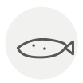

Arctic char
Omble chevalier
| Latin name | Salvelinus alpinus |
|---|---|
| Family | Fish & seafood |
| Origin | Arctic & alpine lakes |
| Season | June – October |
| Flavour | Delicate · Rich · Sweet · Marine |
| Typical price | 18–28 €/kg |
What it is
It lives in the coldest fresh water on Earth, further north than any other freshwater fish, and in the deep alpine lakes of Savoie and Switzerland. Somewhere between salmon and trout in richness, and rarer than either.
In the kitchen
Cook it barely — it is at its best still translucent at the centre. It goes from perfect to chalky in under a minute.
Goes with
Butter Lemon Dill Crème fraîche Hazelnut Chives Beetroot Horseradish
Also used with
In season alongside
Brill Crayfish Dentex Greater amberjack (kanpachi) Splendid alfonsino (kinmedai) Lobster
Something wrong here, or missing? Tell us